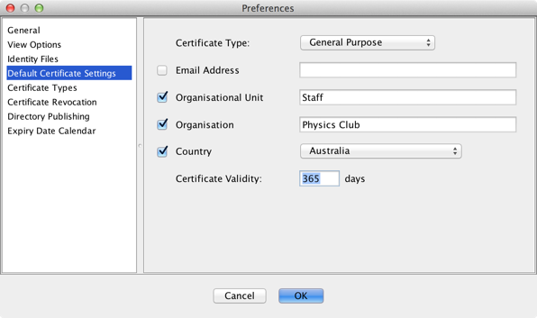

Managing Users
Adding and removing users
SimpleAuthority maintains a list of users on the left-hand side of the main window. Each user represents an entity that can be issued certificates. This may be a person or a computer server.
New users can be added by clicking on the New User button, or by selecting File > New User.
Users can be deleted by highlighting the user in the list and selecting File > Delete User. However, it is recommended that users are not deleted until all certificates issued to that user have expired. This is to ensure that an accurate record is maintained of all valid certificates that have been issued.
User details are shown in the top right-hand side of the main window. These details can be changed by clicking on the Edit User button, or by selecting File > Edit User. Changes will be incorporated into any new certificates that are issued for that user.
The user details normally includes fields for Subject Alternative Name (Email Address by default) and
Organisational Unit. Multiple values can be specified for these fields by separating values with a semi-colon. You
can also prefix values for the Subject Alternative Name with EMAIL:, DNS:,
IP: or URI: to override the default type and specify that the value is an email address,
DNS value, IP address or URI, respectively. These values can also be mixed, for example
DNS:myserver.priv;IP:192.168.0.1
The user details also includes a notes field that can be used to store comments about the user. These comments are not included in any certificates. The notes field can be shown or hidden by selecting View > Show/Hide User Notes from the menu bar.
The default settings for new user details can be changed in Options/Preferences.

Some of these fields (and the corresponding fields in the main window) have check-boxes next to them. If the
check-box is not selected, the associated field will not be included in the certificate.
Importing user details
User details can be imported from LDIF or vCard files. This allows an LDAP directory or address book application to be used to populate user details, rather than typing them in manually.
Select Import > Users from LDIF... or Import > Users from vCard... from the menu bar to import user details. Importing from an LDIF file also allows user certificates to be imported.
When importing user details, the user name, email address, organisational unit and organisation fields are retrieved from the import file. The country, certificate type and certificate validity settings are based on the default certificate settings in Options/Preferences.
User names
Each user has a name, which is used to identity the user. The user name is displayed in the list of users and at the top right-hand side of the main window (in large font).
For people, the name should be the person's full name, e.g. Paul Cuthbert.
For computer servers, the name can be the server domain name or IP address, e.g.
simpleauthority.com or 192.168.0.100. Both IPv4 and IPv6 addresses are supported. Domain
names may also include wild-cards, e.g. *.simpleauthority.com or
server*.simpleauthority.com.
Inactive users
SimpleAuthority maintains a record of which users are "active" and which are "inactive". Active users need their certificates replaced shortly before they expire. Inactive users may be people that have left the organisation or computer servers that are no longer used.
A user must be active before they can be issued a certificate.
A user must be inactive before they can be deleted.
Users can be toggled between active and inactive states using the check-box in the list of users, or by highlighting the user in the list and selecting File > Make User Active or File > Make User Inactive from the menu bar.
Inactive users can be hidden from view by selecting View > Hide Inactive Users.